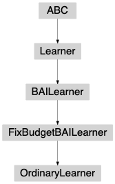
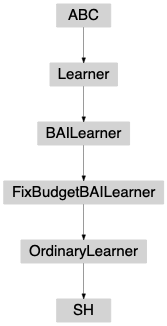
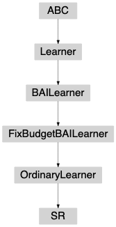
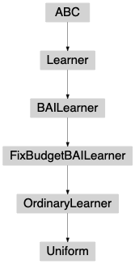

ordinarylearner package¶
-
class
banditpylib.learners.bestarmid.fixbudget.ordinarylearner.OrdinaryLearner(pars)[source]¶ Bases:
banditpylib.learners.bestarmid.fixbudget.utils.FixBudgetBAILearnerBase class for learners in the classic bandit model

-
class
banditpylib.learners.bestarmid.fixbudget.ordinarylearner.SH(pars)[source]¶ Bases:
banditpylib.learners.bestarmid.fixbudget.ordinarylearner.utils.OrdinaryLearnerSequential halving policy [KKS13]

-
class
banditpylib.learners.bestarmid.fixbudget.ordinarylearner.SR(pars)[source]¶ Bases:
banditpylib.learners.bestarmid.fixbudget.ordinarylearner.utils.OrdinaryLearnerSuccessive elimination policy [AB10]

-
class
banditpylib.learners.bestarmid.fixbudget.ordinarylearner.Uniform(pars)[source]¶ Bases:
banditpylib.learners.bestarmid.fixbudget.ordinarylearner.utils.OrdinaryLearnerUniform sampling policy
Sample each arm in a round-robun fashion.